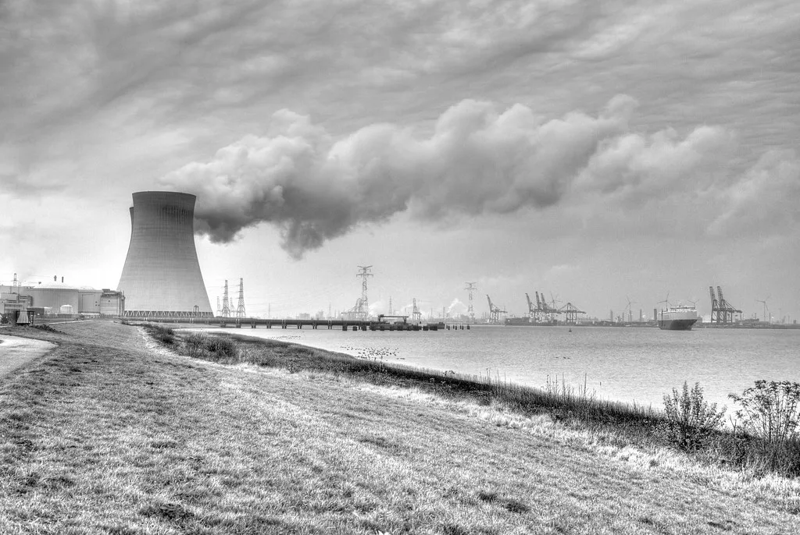
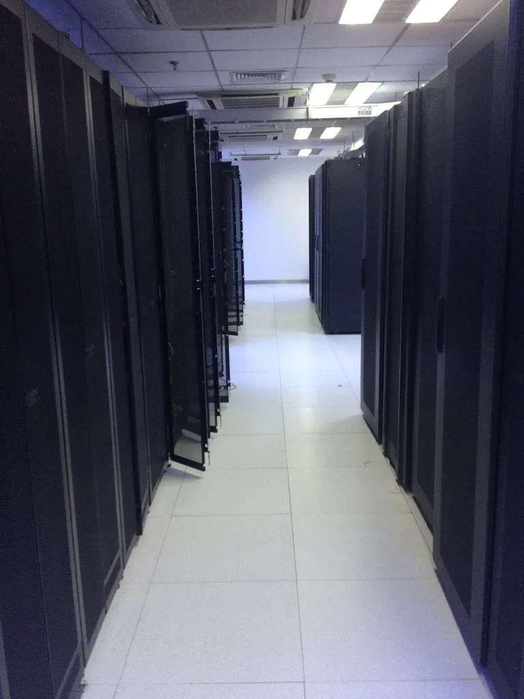

구글, 美 원전서 3.6GW 전력 확보…컨스텔레이션과 장기 계약
구글이 미국 최대 원전 기업인 컨스텔레이션에너지와 대규모 전력구매계약을 체결했다. 인공지능 데이터센터 운영에 필요한 전력 수요가 폭발적으로 늘어나는 상황에서, 구글이 직접 원자력발전 전력을 장기간 확보하는 방식으로 대응에 나선 것이다. 이번 계약으로 구글이 공급받는 전력량은 총 3590메가와트, 약 3.6기가와트에 달한다. 이는 빅테크 기업이 개별 계약으로 확보한 원전 전력 가운데서도 손꼽히는 규모로 평가된다.
계약 구조를 보면 두 갈래로 나뉜다. 먼저 890메가와트는 컨스텔레이션이 일리노이·펜실베이니아·뉴저지주에서 운영 중인 11개 원전 설비를 현대화해 추가로 확보하는 전력으로, 2028년부터 공급이 시작되며 계약 기간은 20년에 이른다. 나머지 2700메가와트는 컨스텔레이션의 기존 발전소에서 바로 공급받는 몫으로, 계약 기간은 15년으로 정해졌다. 신규 설비 증설이 아닌 기존 발전소 활용분이 더 큰 비중을 차지하는 만큼, 공급 개시 시점을 앞당길 수 있다는 점도 눈에 띈다.

이를 위해 컨스텔레이션은 43억달러, 우리 돈으로 약 5조8000억원 이상을 투입해 원전 설비를 개선할 계획이다. 노후 설비를 교체하고 발전 효율을 끌어올려 장기 공급 능력을 키우는 작업으로, 구글이라는 대형 수요처와의 장기 계약이 투자의 안정적인 재원이 되는 구조다. 노후 원전 상당수가 수명 연장이나 설비 교체 시점을 맞고 있던 터라, 이번 계약이 관련 투자에 속도를 더해줄 것이라는 평가도 나온다.
이번 계약에서 눈에 띄는 또 다른 대목은 단순한 전력 구매를 넘어선 기술 제휴다. 구글과 컨스텔레이션은 앞으로 5년간 기술 협력 관계를 맺고, 구글클라우드와 기업용 인공지능 플랫폼인 '제미나이 엔터프라이즈'를 컨스텔레이션의 발전소 운영을 비롯한 인프라 전반에 적용하기로 했다. 원전 기업이 자사 설비 운영에 구글의 AI 기술을 끌어들이는 모양새다. 발전소 가동 데이터를 AI로 분석해 정비 시점을 예측하거나 운영 효율을 높이는 데 활용될 것으로 알려졌다.

구글의 이번 행보는 전 세계적으로 번지고 있는 'AI 전력난'의 단면을 보여준다. 거대언어모델 학습과 서비스 운영에 필요한 데이터센터는 기존 전력망으로 감당하기 어려울 정도로 전력 소비량이 커지고 있고, 이에 빅테크 기업들은 재생에너지뿐 아니라 원자력발전까지 끌어들여 안정적인 전력원을 확보하려는 움직임을 보이고 있다. 앞서 구글은 유럽에서도 150억달러 규모의 AI 투자를 발표하며 원전 전력 확보에 나선 바 있다. 전력망 신설에 걸리는 시간이 긴 만큼, 이미 가동 중인 원전과 직접 계약을 맺는 방식이 빅테크 사이에서 빠르게 확산하는 분위기다.
전문가들은 AI 산업의 전력 수요가 당분간 꺾이지 않을 것으로 보고 있으며, 빅테크와 원전 기업 간의 이 같은 장기 계약이 앞으로도 잇따를 가능성이 크다고 내다본다. 노후 원전의 수명을 연장하거나 설비를 현대화하는 비용을 수요 기업이 분담하는 방식은, 전력 공급자와 수요자 모두에게 위험을 나누는 새로운 계약 모델로 자리잡는 분위기다. 미국 내에서도 이미 몇몇 빅테크가 폐쇄 직전의 원전을 재가동하거나 소형모듈원전 투자에 나서는 등 비슷한 흐름이 이어지고 있다.
결국 이번 구글-컨스텔레이션 계약은 AI 산업 확장이 에너지 산업의 투자 지형까지 바꾸고 있음을 보여주는 사례로 평가된다. 미국 내 원전이 AI 데이터센터의 핵심 전력원으로 재조명받는 가운데, 국내 원전·전력 업계 역시 이 같은 흐름을 주시하며 관련 사업 기회를 모색할 것으로 보인다. AI 데이터센터 확충과 안정적 전력 확보라는 두 과제가 맞물리면서, 이번 계약과 유사한 형태의 거래가 국내에서도 나올 수 있을지 관심이 모인다.